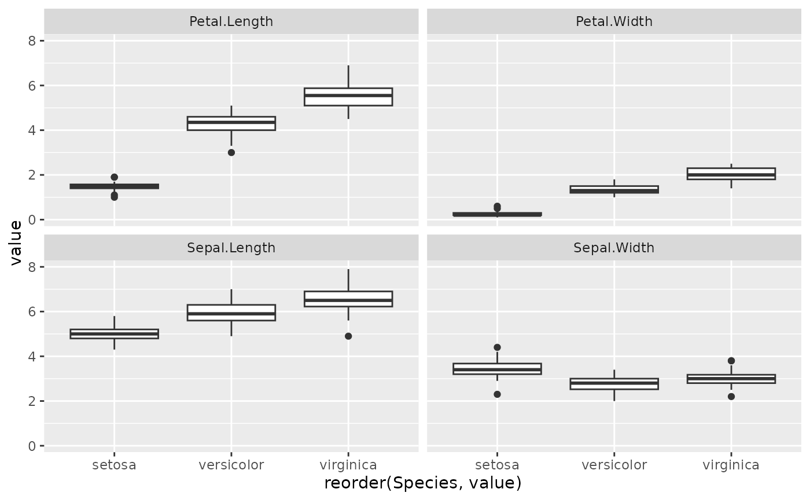

Reorder a column before plotting with faceting, such that the values are
ordered within each facet. This requires two functions: reorder_within
applied to the column, then either scale_x_reordered or
scale_y_reordered added to the plot.
This is implemented as a bit of a hack: it appends ___ and then the facet
at the end of each string.
reorder_within(x, by, within, fun = mean, sep = "___", ...)
scale_x_reordered(..., labels = reorder_func, sep = deprecated())
scale_y_reordered(..., labels = reorder_func, sep = deprecated())
reorder_func(x, sep = "___")"Ordering categories within ggplot2 Facets" by Tyler Rinker: https://trinkerrstuff.wordpress.com/2016/12/23/ordering-categories-within-ggplot2-facets/
Vector to reorder.
Vector of the same length, to use for reordering.
Vector or list of vectors of the same length that will later be used for faceting. A list of vectors will be used to facet within multiple variables.
Function to perform within each subset to determine the resulting ordering. By default, mean.
Separator to distinguish by and within. You may want to set this
manually if ___ can exist within one of your labels.
In reorder_within arguments passed on to
reorder(). In the scale functions, extra arguments passed on to
ggplot2::scale_x_discrete() or ggplot2::scale_y_discrete().
Function to transform the labels of
ggplot2::scale_x_discrete(), by default reorder_func.
library(tidyr)
library(ggplot2)
iris_gathered <- gather(iris, metric, value, -Species)
# reordering doesn't work within each facet (see Sepal.Width):
ggplot(iris_gathered, aes(reorder(Species, value), value)) +
geom_boxplot() +
facet_wrap(~ metric)

# reorder_within and scale_x_reordered work.
# (Note that you need to set scales = "free_x" in the facet)
ggplot(iris_gathered, aes(reorder_within(Species, value, metric), value)) +
geom_boxplot() +
scale_x_reordered() +
facet_wrap(~ metric, scales = "free_x")
# to reorder within multiple variables, set within to the list of
# facet variables.
ggplot(mtcars, aes(reorder_within(carb, mpg, list(vs, am)), mpg)) +
geom_boxplot() +
scale_x_reordered() +
facet_wrap(vs ~ am, scales = "free_x")